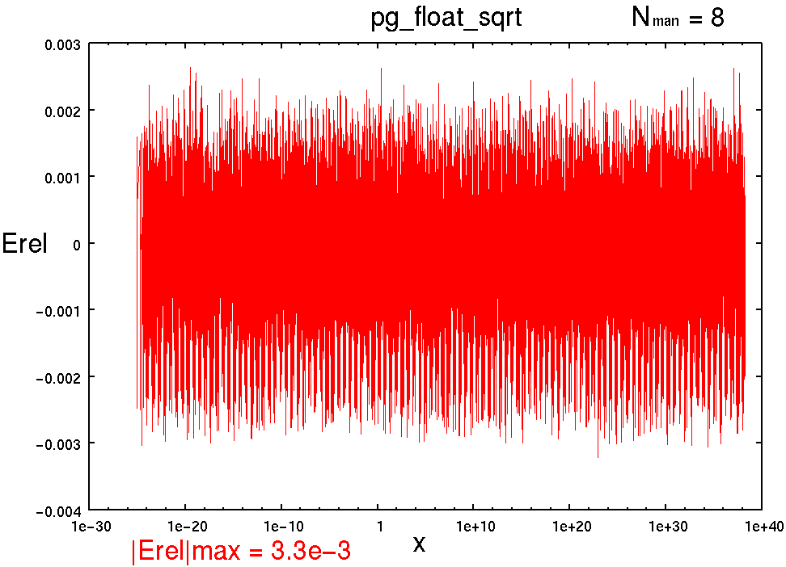
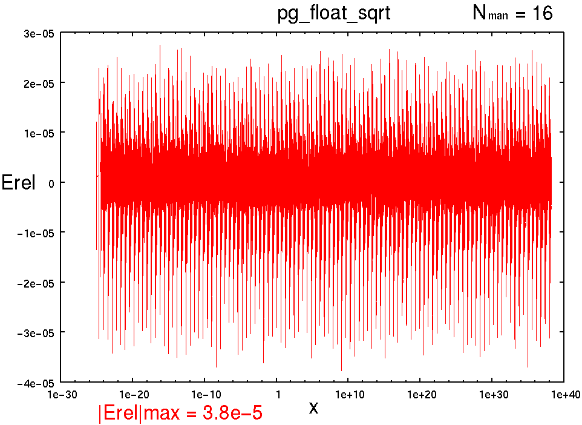
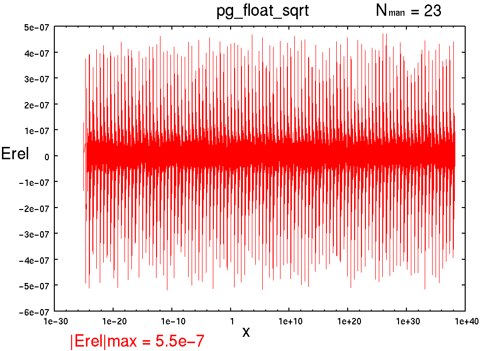

[↑TOP]
pg_float_sqrt : 浮動小数点型 符号付 平方根
書式
pg_float_sqrt(x, z, NFLO, NMAN, NST);
引数
- x
- : 入力値
- z
- : 演算結果 : 入力の平方根
- NFLO
- : 浮動小数点ワードビット幅
- NMAN
- : 仮数部(精度)ビット幅
- NST
- : パイプラインステージ数
記述例
pg_float_sqrt(x, z, 18, 8, 3);
pg_float_sqrt(x, z, 26, 16, 3);
pg_float_sqrt(x, z, 33, 23, 3);
概要
z = sqrt(x);
つまり, 入力の平方根を計算する.
パイプラインマップ (NMAN21を境に切り替え)
NMAN 21 以下
NST 1 : 1[-], 2[-], 3[-], 4[-], 5[-], 6[-], 7[-], 8[O]
NST 2 : 1[-], 2[-], 3[-], 4[O], 5[-], 6[-], 7[-], 8[O]
NST 3 : 1[-], 2[-], 3[O], 4[-], 5[O], 6[-], 7[-], 8[O]
NST 4 : 1[-], 2[-], 3[O], 4[O], 5[-], 6[O], 7[-], 8[O]
NST 5 : 1[-], 2[-], 3[O], 4[O], 5[O], 6[O], 7[-], 8[O]
NMAN 22 以上
NST 1 : 1[-], 2[-], 3[-], 4[-], 5[-], 6[-], 7[-], 8[O]
NST 2 : 1[-], 2[-], 3[-], 4[O], 5[-], 6[-], 7[-], 8[O]
NST 3 : 1[-], 2[-], 3[O], 4[-], 5[O], 6[-], 7[-], 8[O]
NST 4 : 1[-], 2[O], 3[-], 4[O], 5[O], 6[-], 7[-], 8[O]
NST 5 : 1[-], 2[O], 3[O], 4[O], 5[O], 6[-], 7[-], 8[O]
NST 6 : 1[-], 2[O], 3[O], 4[O], 5[O], 6[O], 7[-], 8[O]
性能(Xilinx Virtex-II PRO XC2VP70-5FF1517C)
----------------------------------------------------------------------------------------
pg_float_sqrt(x, z, 18, 8, NST);
NFLO=18
NMAN= 8
NST, MHz , Cpath, Slices, FFs, LUTs, MULT18X18
1 , 79.971, 0-8 , 51, 18, 91, 3
2 , 110.448, 4-8 , 63, 40, 111, 5
3 , 157.754, 5-8 , 71, 94, 96, 3
4 , 171.497, 4-6 , 87, 121, 111, 5
5 , 215.517, 0-3 , 86, 95, 133, 5
----------------------------------------------------------------------------------------
pg_float_sqrt(x, z, 26, 16, NST);
NFLO=26
NMAN=16
NST, MHz , Cpath, Slices, FFs, LUTs, MULT18X18
1 , 56.500, 0-8 , 84, 26, 150, 3
2 , 94.706, 4-8 , 107, 56, 194, 5
3 , 127.959, 3-5 , 116, 158, 155, 3
4 , 146.499, 4-6 , 140, 185, 194, 5
5 , 188.964, 3-4 , 140, 159, 224, 5
----------------------------------------------------------------------------------------
pg_float_sqrt(x, z, 33, 23, NST);
NFLO=33
NMAN=23
NST, MHz , Cpath, Slices, FFs, LUTs, MULT18X18
1 , 38.990, 0-8 , 347, 33, 620, 10
2 , 70.210, 0-4 , 374, 70, 676, 10
3 , 86.363, 0-3 , 364, 221, 648, 10
4 , 104.998, 2-4 , 392, 251, 700, 10
5 , 132.709, 5-8 , 425, 265, 737, 10
6 , 141.243, 4-5 , 425, 285, 737, 10
演算精度 |Erel|max
-
pg_float_sqrt(x, z, 18, 8, NST);
|Erel|max = 3.3e-3

-
pg_float_sqrt(x, z, 26, 16, NST);
|Erel|max = 3.8e-5

-
pg_float_sqrt(x, z, 33, 23, NST);
|Erel|max = 5.5e-7

参照
Change Log
- 2004.10.27 : 精度グラフ追加
- 2004.10.17 : 単精度のパイプライニング努力. 乗算器4分割対応. 一応格好つけたつもり.
- 2004.10.14 : まだまだちっさくできるはずだけど...
- 2004.10.12 : the first edition by T. Hamada
{kind=link}
{kind=link}
{kind=link}